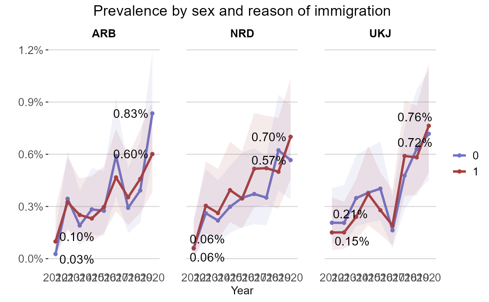

The plot_rates() plots prevalence/incidence rates
Usage
plot_rates(
data,
date_col = "date",
rate_col,
grouping_var = NULL,
facet_var = NULL,
plot_type = c("line", "bar_chart", "lollipop", "jitter"),
percent = TRUE,
palette = c("fhi_colors", "viridis", "okabe_ito"),
single_color = "black",
annotated_line = NULL,
CI_lower = NULL,
CI_upper = NULL,
plot_title = "",
x_name = "",
y_name = "",
legend_title = "",
coord_flip = FALSE,
start_end_points = FALSE,
interactive = FALSE
)Arguments
- data
A data frame with the prevalence/incidence rates and auxiliary information.
- date_col
A character string. Name of the date column in
data. Default is "date".- rate_col
A character string. Name of the rate column in
data.- grouping_var
A character string. Name of the variable/column in
dataused to group rates.- facet_var
A character string. Name of the variable/column in
dataused to facet plots.- plot_type
A character string. Type of plot, options are "line", "bar_chart", "lollipop", "jitter"
- percent
Logical. Do you want axis to be in percent? Default set to TRUE.
- palette
A character string. Color palette to be used in the plots, options are: "fhi_colors", "viridis", "okabe_ito"
- single_color
A character string. Single color applied to all the plot. Default is set to "black"
- annotated_line
Character string. Position of annotated line. Default is NULL.
- CI_lower
A character string. Name of the column containing the lower confidence interval in
data.- CI_upper
A character string. Name of the column containing the upper confidence interval in
data.- plot_title
Character string. Title of the plot.
- x_name
A character string. Title of the x axis.
- y_name
A character string. Title of the y axis.
- legend_title
A character string. Title for the legend box.
- coord_flip
Logical. Default is set to
FALSEFor lollipop, bar charts and jitter
TRUEit flips the orientation of the plot.
- start_end_points
Logical. Want to annotate the start and end points of a line plot? Default is set to
FALSE.If
TRUE, the start and end point of a line plot are annotated with their corresponding numerical values.
- interactive
Logical. Do you want to make the plot interactive with plotly? Default is set to FALSE.
Examples
log_file <- tempfile()
cat("Example log file", file = log_file)
pop_df <- tidyr::expand_grid(year = 2012:2020,
sex = as.factor(c(0, 1)),
innvandringsgrunn = c("ARB", "UKJ", "NRD")) |>
dplyr::mutate(population = floor(runif(dplyr::n(), min = 3000, max = 4000)))
linked_df <- linked_df |> dplyr::rename("year"= "diag_year")
prev_series <- regtools::calculate_prevalence_series(linked_df,
time_points = c(2012:2020),
id_col = "id",
date_col = "year",
pop_data = pop_df,
pop_col = "population",
grouping_vars = c("sex", "innvandringsgrunn"),
only_counts = FALSE,
suppression = FALSE,
CI = TRUE,
CI_level = 0.95,
log_path = log_file)
#> Computing prevalence rates/counts...
#> ! No suppression. Confidentiality cannot be assured.
#>
#> ✔ Prevalence rates ready!
#>
#> ── Summary ─────────────────────────────────────────────────────────────────────
#> ℹ Diagnostic and demographic data: linked_data
#> ℹ Population data: c("2012", "2012", "2012", "2012", "2012", "2012", "2013", "2013", "2013", "2013", "2013", "2013", "2014", "2014", "2014", "2014", "2014", "2014", "2015", "2015", "2015", "2015", "2015", "2015", "2016", "2016", "2016", "2016", "2016", "2016", "2017", "2017", "2017", "2017", "2017", "2017", "2018", "2018", "2018", "2018", "2018", "2018", "2019", "2019", "2019", "2019", "2019", "2019", "2020", "2020", "2020", "2020", "2020", "2020"), c(1, 1, 1, 2, 2, 2, 1, 1, 1, 2, 2, 2, 1, 1, 1, 2, 2, 2, 1, 1, 1, 2, 2, 2, 1, 1, 1, 2, 2, 2, 1, 1, 1, 2, 2, 2, 1, 1, 1, 2, 2, 2, 1, 1, 1, 2, 2, 2, 1, 1, 1, 2, 2, 2), c("ARB", "UKJ", "NRD", "ARB", "UKJ", "NRD", "ARB", "UKJ", "NRD", "ARB", "UKJ", "NRD", "ARB", "UKJ", "NRD", "ARB", "UKJ", "NRD", "ARB", "UKJ", "NRD", "ARB", "UKJ", "NRD", "ARB", "UKJ", "NRD", "ARB", "UKJ", "NRD", "ARB", "UKJ", "NRD", "ARB", "UKJ", "NRD", "ARB", "UKJ", "NRD", "ARB", "UKJ", "NRD", "ARB", "UKJ", "NRD", "ARB", "UKJ", "NRD", "ARB", "UKJ", "NRD", "ARB", "UKJ", "NRD"), and c(3772, 3874, 3174, 3034, 3320, 3402, 3195, 3403, 3063, 3388, 3975, 3289, 3678, 3735, 3195, 3980, 3741, 3051, 3530, 3695, 3688, 3031, 3225, 3300, 3636, 3479, 3432, 3706, 3948, 3180, 3216, 3680, 3498, 3641, 3660, 3096, 3765, 3769, 3990, 3970, 3389, 3461, 3315, 3174, 3531, 3493, 3779, 3204, 3713, 3065, 3354, 3825, 3273, 3570)
#> ℹ Grouped by variables: sex and innvandringsgrunn
#> ℹ For time point/period: 2012
#> Computing prevalence rates/counts...
#> ! No suppression. Confidentiality cannot be assured.
#>
#> ✔ Prevalence rates ready!
#>
#> ── Summary ─────────────────────────────────────────────────────────────────────
#> ℹ Diagnostic and demographic data: linked_data
#> ℹ Population data: c("2012", "2012", "2012", "2012", "2012", "2012", "2013", "2013", "2013", "2013", "2013", "2013", "2014", "2014", "2014", "2014", "2014", "2014", "2015", "2015", "2015", "2015", "2015", "2015", "2016", "2016", "2016", "2016", "2016", "2016", "2017", "2017", "2017", "2017", "2017", "2017", "2018", "2018", "2018", "2018", "2018", "2018", "2019", "2019", "2019", "2019", "2019", "2019", "2020", "2020", "2020", "2020", "2020", "2020"), c(1, 1, 1, 2, 2, 2, 1, 1, 1, 2, 2, 2, 1, 1, 1, 2, 2, 2, 1, 1, 1, 2, 2, 2, 1, 1, 1, 2, 2, 2, 1, 1, 1, 2, 2, 2, 1, 1, 1, 2, 2, 2, 1, 1, 1, 2, 2, 2, 1, 1, 1, 2, 2, 2), c("ARB", "UKJ", "NRD", "ARB", "UKJ", "NRD", "ARB", "UKJ", "NRD", "ARB", "UKJ", "NRD", "ARB", "UKJ", "NRD", "ARB", "UKJ", "NRD", "ARB", "UKJ", "NRD", "ARB", "UKJ", "NRD", "ARB", "UKJ", "NRD", "ARB", "UKJ", "NRD", "ARB", "UKJ", "NRD", "ARB", "UKJ", "NRD", "ARB", "UKJ", "NRD", "ARB", "UKJ", "NRD", "ARB", "UKJ", "NRD", "ARB", "UKJ", "NRD", "ARB", "UKJ", "NRD", "ARB", "UKJ", "NRD"), and c(3772, 3874, 3174, 3034, 3320, 3402, 3195, 3403, 3063, 3388, 3975, 3289, 3678, 3735, 3195, 3980, 3741, 3051, 3530, 3695, 3688, 3031, 3225, 3300, 3636, 3479, 3432, 3706, 3948, 3180, 3216, 3680, 3498, 3641, 3660, 3096, 3765, 3769, 3990, 3970, 3389, 3461, 3315, 3174, 3531, 3493, 3779, 3204, 3713, 3065, 3354, 3825, 3273, 3570)
#> ℹ Grouped by variables: sex and innvandringsgrunn
#> ℹ For time point/period: 2013
#> Computing prevalence rates/counts...
#> ! No suppression. Confidentiality cannot be assured.
#>
#> ✔ Prevalence rates ready!
#>
#> ── Summary ─────────────────────────────────────────────────────────────────────
#> ℹ Diagnostic and demographic data: linked_data
#> ℹ Population data: c("2012", "2012", "2012", "2012", "2012", "2012", "2013", "2013", "2013", "2013", "2013", "2013", "2014", "2014", "2014", "2014", "2014", "2014", "2015", "2015", "2015", "2015", "2015", "2015", "2016", "2016", "2016", "2016", "2016", "2016", "2017", "2017", "2017", "2017", "2017", "2017", "2018", "2018", "2018", "2018", "2018", "2018", "2019", "2019", "2019", "2019", "2019", "2019", "2020", "2020", "2020", "2020", "2020", "2020"), c(1, 1, 1, 2, 2, 2, 1, 1, 1, 2, 2, 2, 1, 1, 1, 2, 2, 2, 1, 1, 1, 2, 2, 2, 1, 1, 1, 2, 2, 2, 1, 1, 1, 2, 2, 2, 1, 1, 1, 2, 2, 2, 1, 1, 1, 2, 2, 2, 1, 1, 1, 2, 2, 2), c("ARB", "UKJ", "NRD", "ARB", "UKJ", "NRD", "ARB", "UKJ", "NRD", "ARB", "UKJ", "NRD", "ARB", "UKJ", "NRD", "ARB", "UKJ", "NRD", "ARB", "UKJ", "NRD", "ARB", "UKJ", "NRD", "ARB", "UKJ", "NRD", "ARB", "UKJ", "NRD", "ARB", "UKJ", "NRD", "ARB", "UKJ", "NRD", "ARB", "UKJ", "NRD", "ARB", "UKJ", "NRD", "ARB", "UKJ", "NRD", "ARB", "UKJ", "NRD", "ARB", "UKJ", "NRD", "ARB", "UKJ", "NRD"), and c(3772, 3874, 3174, 3034, 3320, 3402, 3195, 3403, 3063, 3388, 3975, 3289, 3678, 3735, 3195, 3980, 3741, 3051, 3530, 3695, 3688, 3031, 3225, 3300, 3636, 3479, 3432, 3706, 3948, 3180, 3216, 3680, 3498, 3641, 3660, 3096, 3765, 3769, 3990, 3970, 3389, 3461, 3315, 3174, 3531, 3493, 3779, 3204, 3713, 3065, 3354, 3825, 3273, 3570)
#> ℹ Grouped by variables: sex and innvandringsgrunn
#> ℹ For time point/period: 2014
#> Computing prevalence rates/counts...
#> ! No suppression. Confidentiality cannot be assured.
#>
#> ✔ Prevalence rates ready!
#>
#> ── Summary ─────────────────────────────────────────────────────────────────────
#> ℹ Diagnostic and demographic data: linked_data
#> ℹ Population data: c("2012", "2012", "2012", "2012", "2012", "2012", "2013", "2013", "2013", "2013", "2013", "2013", "2014", "2014", "2014", "2014", "2014", "2014", "2015", "2015", "2015", "2015", "2015", "2015", "2016", "2016", "2016", "2016", "2016", "2016", "2017", "2017", "2017", "2017", "2017", "2017", "2018", "2018", "2018", "2018", "2018", "2018", "2019", "2019", "2019", "2019", "2019", "2019", "2020", "2020", "2020", "2020", "2020", "2020"), c(1, 1, 1, 2, 2, 2, 1, 1, 1, 2, 2, 2, 1, 1, 1, 2, 2, 2, 1, 1, 1, 2, 2, 2, 1, 1, 1, 2, 2, 2, 1, 1, 1, 2, 2, 2, 1, 1, 1, 2, 2, 2, 1, 1, 1, 2, 2, 2, 1, 1, 1, 2, 2, 2), c("ARB", "UKJ", "NRD", "ARB", "UKJ", "NRD", "ARB", "UKJ", "NRD", "ARB", "UKJ", "NRD", "ARB", "UKJ", "NRD", "ARB", "UKJ", "NRD", "ARB", "UKJ", "NRD", "ARB", "UKJ", "NRD", "ARB", "UKJ", "NRD", "ARB", "UKJ", "NRD", "ARB", "UKJ", "NRD", "ARB", "UKJ", "NRD", "ARB", "UKJ", "NRD", "ARB", "UKJ", "NRD", "ARB", "UKJ", "NRD", "ARB", "UKJ", "NRD", "ARB", "UKJ", "NRD", "ARB", "UKJ", "NRD"), and c(3772, 3874, 3174, 3034, 3320, 3402, 3195, 3403, 3063, 3388, 3975, 3289, 3678, 3735, 3195, 3980, 3741, 3051, 3530, 3695, 3688, 3031, 3225, 3300, 3636, 3479, 3432, 3706, 3948, 3180, 3216, 3680, 3498, 3641, 3660, 3096, 3765, 3769, 3990, 3970, 3389, 3461, 3315, 3174, 3531, 3493, 3779, 3204, 3713, 3065, 3354, 3825, 3273, 3570)
#> ℹ Grouped by variables: sex and innvandringsgrunn
#> ℹ For time point/period: 2015
#> Computing prevalence rates/counts...
#> ! No suppression. Confidentiality cannot be assured.
#>
#> ✔ Prevalence rates ready!
#>
#> ── Summary ─────────────────────────────────────────────────────────────────────
#> ℹ Diagnostic and demographic data: linked_data
#> ℹ Population data: c("2012", "2012", "2012", "2012", "2012", "2012", "2013", "2013", "2013", "2013", "2013", "2013", "2014", "2014", "2014", "2014", "2014", "2014", "2015", "2015", "2015", "2015", "2015", "2015", "2016", "2016", "2016", "2016", "2016", "2016", "2017", "2017", "2017", "2017", "2017", "2017", "2018", "2018", "2018", "2018", "2018", "2018", "2019", "2019", "2019", "2019", "2019", "2019", "2020", "2020", "2020", "2020", "2020", "2020"), c(1, 1, 1, 2, 2, 2, 1, 1, 1, 2, 2, 2, 1, 1, 1, 2, 2, 2, 1, 1, 1, 2, 2, 2, 1, 1, 1, 2, 2, 2, 1, 1, 1, 2, 2, 2, 1, 1, 1, 2, 2, 2, 1, 1, 1, 2, 2, 2, 1, 1, 1, 2, 2, 2), c("ARB", "UKJ", "NRD", "ARB", "UKJ", "NRD", "ARB", "UKJ", "NRD", "ARB", "UKJ", "NRD", "ARB", "UKJ", "NRD", "ARB", "UKJ", "NRD", "ARB", "UKJ", "NRD", "ARB", "UKJ", "NRD", "ARB", "UKJ", "NRD", "ARB", "UKJ", "NRD", "ARB", "UKJ", "NRD", "ARB", "UKJ", "NRD", "ARB", "UKJ", "NRD", "ARB", "UKJ", "NRD", "ARB", "UKJ", "NRD", "ARB", "UKJ", "NRD", "ARB", "UKJ", "NRD", "ARB", "UKJ", "NRD"), and c(3772, 3874, 3174, 3034, 3320, 3402, 3195, 3403, 3063, 3388, 3975, 3289, 3678, 3735, 3195, 3980, 3741, 3051, 3530, 3695, 3688, 3031, 3225, 3300, 3636, 3479, 3432, 3706, 3948, 3180, 3216, 3680, 3498, 3641, 3660, 3096, 3765, 3769, 3990, 3970, 3389, 3461, 3315, 3174, 3531, 3493, 3779, 3204, 3713, 3065, 3354, 3825, 3273, 3570)
#> ℹ Grouped by variables: sex and innvandringsgrunn
#> ℹ For time point/period: 2016
#> Computing prevalence rates/counts...
#> ! No suppression. Confidentiality cannot be assured.
#>
#> ✔ Prevalence rates ready!
#>
#> ── Summary ─────────────────────────────────────────────────────────────────────
#> ℹ Diagnostic and demographic data: linked_data
#> ℹ Population data: c("2012", "2012", "2012", "2012", "2012", "2012", "2013", "2013", "2013", "2013", "2013", "2013", "2014", "2014", "2014", "2014", "2014", "2014", "2015", "2015", "2015", "2015", "2015", "2015", "2016", "2016", "2016", "2016", "2016", "2016", "2017", "2017", "2017", "2017", "2017", "2017", "2018", "2018", "2018", "2018", "2018", "2018", "2019", "2019", "2019", "2019", "2019", "2019", "2020", "2020", "2020", "2020", "2020", "2020"), c(1, 1, 1, 2, 2, 2, 1, 1, 1, 2, 2, 2, 1, 1, 1, 2, 2, 2, 1, 1, 1, 2, 2, 2, 1, 1, 1, 2, 2, 2, 1, 1, 1, 2, 2, 2, 1, 1, 1, 2, 2, 2, 1, 1, 1, 2, 2, 2, 1, 1, 1, 2, 2, 2), c("ARB", "UKJ", "NRD", "ARB", "UKJ", "NRD", "ARB", "UKJ", "NRD", "ARB", "UKJ", "NRD", "ARB", "UKJ", "NRD", "ARB", "UKJ", "NRD", "ARB", "UKJ", "NRD", "ARB", "UKJ", "NRD", "ARB", "UKJ", "NRD", "ARB", "UKJ", "NRD", "ARB", "UKJ", "NRD", "ARB", "UKJ", "NRD", "ARB", "UKJ", "NRD", "ARB", "UKJ", "NRD", "ARB", "UKJ", "NRD", "ARB", "UKJ", "NRD", "ARB", "UKJ", "NRD", "ARB", "UKJ", "NRD"), and c(3772, 3874, 3174, 3034, 3320, 3402, 3195, 3403, 3063, 3388, 3975, 3289, 3678, 3735, 3195, 3980, 3741, 3051, 3530, 3695, 3688, 3031, 3225, 3300, 3636, 3479, 3432, 3706, 3948, 3180, 3216, 3680, 3498, 3641, 3660, 3096, 3765, 3769, 3990, 3970, 3389, 3461, 3315, 3174, 3531, 3493, 3779, 3204, 3713, 3065, 3354, 3825, 3273, 3570)
#> ℹ Grouped by variables: sex and innvandringsgrunn
#> ℹ For time point/period: 2017
#> Computing prevalence rates/counts...
#> ! No suppression. Confidentiality cannot be assured.
#>
#> ✔ Prevalence rates ready!
#>
#> ── Summary ─────────────────────────────────────────────────────────────────────
#> ℹ Diagnostic and demographic data: linked_data
#> ℹ Population data: c("2012", "2012", "2012", "2012", "2012", "2012", "2013", "2013", "2013", "2013", "2013", "2013", "2014", "2014", "2014", "2014", "2014", "2014", "2015", "2015", "2015", "2015", "2015", "2015", "2016", "2016", "2016", "2016", "2016", "2016", "2017", "2017", "2017", "2017", "2017", "2017", "2018", "2018", "2018", "2018", "2018", "2018", "2019", "2019", "2019", "2019", "2019", "2019", "2020", "2020", "2020", "2020", "2020", "2020"), c(1, 1, 1, 2, 2, 2, 1, 1, 1, 2, 2, 2, 1, 1, 1, 2, 2, 2, 1, 1, 1, 2, 2, 2, 1, 1, 1, 2, 2, 2, 1, 1, 1, 2, 2, 2, 1, 1, 1, 2, 2, 2, 1, 1, 1, 2, 2, 2, 1, 1, 1, 2, 2, 2), c("ARB", "UKJ", "NRD", "ARB", "UKJ", "NRD", "ARB", "UKJ", "NRD", "ARB", "UKJ", "NRD", "ARB", "UKJ", "NRD", "ARB", "UKJ", "NRD", "ARB", "UKJ", "NRD", "ARB", "UKJ", "NRD", "ARB", "UKJ", "NRD", "ARB", "UKJ", "NRD", "ARB", "UKJ", "NRD", "ARB", "UKJ", "NRD", "ARB", "UKJ", "NRD", "ARB", "UKJ", "NRD", "ARB", "UKJ", "NRD", "ARB", "UKJ", "NRD", "ARB", "UKJ", "NRD", "ARB", "UKJ", "NRD"), and c(3772, 3874, 3174, 3034, 3320, 3402, 3195, 3403, 3063, 3388, 3975, 3289, 3678, 3735, 3195, 3980, 3741, 3051, 3530, 3695, 3688, 3031, 3225, 3300, 3636, 3479, 3432, 3706, 3948, 3180, 3216, 3680, 3498, 3641, 3660, 3096, 3765, 3769, 3990, 3970, 3389, 3461, 3315, 3174, 3531, 3493, 3779, 3204, 3713, 3065, 3354, 3825, 3273, 3570)
#> ℹ Grouped by variables: sex and innvandringsgrunn
#> ℹ For time point/period: 2018
#> Computing prevalence rates/counts...
#> ! No suppression. Confidentiality cannot be assured.
#>
#> ✔ Prevalence rates ready!
#>
#> ── Summary ─────────────────────────────────────────────────────────────────────
#> ℹ Diagnostic and demographic data: linked_data
#> ℹ Population data: c("2012", "2012", "2012", "2012", "2012", "2012", "2013", "2013", "2013", "2013", "2013", "2013", "2014", "2014", "2014", "2014", "2014", "2014", "2015", "2015", "2015", "2015", "2015", "2015", "2016", "2016", "2016", "2016", "2016", "2016", "2017", "2017", "2017", "2017", "2017", "2017", "2018", "2018", "2018", "2018", "2018", "2018", "2019", "2019", "2019", "2019", "2019", "2019", "2020", "2020", "2020", "2020", "2020", "2020"), c(1, 1, 1, 2, 2, 2, 1, 1, 1, 2, 2, 2, 1, 1, 1, 2, 2, 2, 1, 1, 1, 2, 2, 2, 1, 1, 1, 2, 2, 2, 1, 1, 1, 2, 2, 2, 1, 1, 1, 2, 2, 2, 1, 1, 1, 2, 2, 2, 1, 1, 1, 2, 2, 2), c("ARB", "UKJ", "NRD", "ARB", "UKJ", "NRD", "ARB", "UKJ", "NRD", "ARB", "UKJ", "NRD", "ARB", "UKJ", "NRD", "ARB", "UKJ", "NRD", "ARB", "UKJ", "NRD", "ARB", "UKJ", "NRD", "ARB", "UKJ", "NRD", "ARB", "UKJ", "NRD", "ARB", "UKJ", "NRD", "ARB", "UKJ", "NRD", "ARB", "UKJ", "NRD", "ARB", "UKJ", "NRD", "ARB", "UKJ", "NRD", "ARB", "UKJ", "NRD", "ARB", "UKJ", "NRD", "ARB", "UKJ", "NRD"), and c(3772, 3874, 3174, 3034, 3320, 3402, 3195, 3403, 3063, 3388, 3975, 3289, 3678, 3735, 3195, 3980, 3741, 3051, 3530, 3695, 3688, 3031, 3225, 3300, 3636, 3479, 3432, 3706, 3948, 3180, 3216, 3680, 3498, 3641, 3660, 3096, 3765, 3769, 3990, 3970, 3389, 3461, 3315, 3174, 3531, 3493, 3779, 3204, 3713, 3065, 3354, 3825, 3273, 3570)
#> ℹ Grouped by variables: sex and innvandringsgrunn
#> ℹ For time point/period: 2019
#> Computing prevalence rates/counts...
#> ! No suppression. Confidentiality cannot be assured.
#>
#> ✔ Prevalence rates ready!
#>
#> ── Summary ─────────────────────────────────────────────────────────────────────
#> ℹ Diagnostic and demographic data: linked_data
#> ℹ Population data: c("2012", "2012", "2012", "2012", "2012", "2012", "2013", "2013", "2013", "2013", "2013", "2013", "2014", "2014", "2014", "2014", "2014", "2014", "2015", "2015", "2015", "2015", "2015", "2015", "2016", "2016", "2016", "2016", "2016", "2016", "2017", "2017", "2017", "2017", "2017", "2017", "2018", "2018", "2018", "2018", "2018", "2018", "2019", "2019", "2019", "2019", "2019", "2019", "2020", "2020", "2020", "2020", "2020", "2020"), c(1, 1, 1, 2, 2, 2, 1, 1, 1, 2, 2, 2, 1, 1, 1, 2, 2, 2, 1, 1, 1, 2, 2, 2, 1, 1, 1, 2, 2, 2, 1, 1, 1, 2, 2, 2, 1, 1, 1, 2, 2, 2, 1, 1, 1, 2, 2, 2, 1, 1, 1, 2, 2, 2), c("ARB", "UKJ", "NRD", "ARB", "UKJ", "NRD", "ARB", "UKJ", "NRD", "ARB", "UKJ", "NRD", "ARB", "UKJ", "NRD", "ARB", "UKJ", "NRD", "ARB", "UKJ", "NRD", "ARB", "UKJ", "NRD", "ARB", "UKJ", "NRD", "ARB", "UKJ", "NRD", "ARB", "UKJ", "NRD", "ARB", "UKJ", "NRD", "ARB", "UKJ", "NRD", "ARB", "UKJ", "NRD", "ARB", "UKJ", "NRD", "ARB", "UKJ", "NRD", "ARB", "UKJ", "NRD", "ARB", "UKJ", "NRD"), and c(3772, 3874, 3174, 3034, 3320, 3402, 3195, 3403, 3063, 3388, 3975, 3289, 3678, 3735, 3195, 3980, 3741, 3051, 3530, 3695, 3688, 3031, 3225, 3300, 3636, 3479, 3432, 3706, 3948, 3180, 3216, 3680, 3498, 3641, 3660, 3096, 3765, 3769, 3990, 3970, 3389, 3461, 3315, 3174, 3531, 3493, 3779, 3204, 3713, 3065, 3354, 3825, 3273, 3570)
#> ℹ Grouped by variables: sex and innvandringsgrunn
#> ℹ For time point/period: 2020
plot_rates(prev_series,
date_col = "year",
rate_col = "prev_rate",
plot_type = "line",
grouping_var = "sex",
facet_var = "innvandringsgrunn",
palette = "fhi_colors",
CI_lower = "ci_results_lower",
CI_upper = "ci_results_upper",
plot_title = "Prevalence by sex and reason of immigration",
x_name = "Year",
start_end_points = TRUE)
